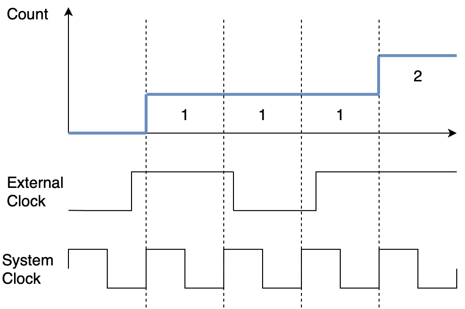
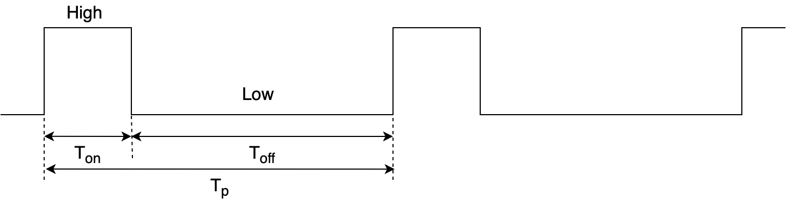
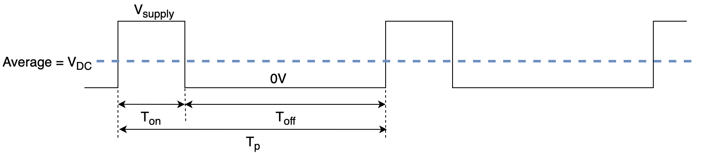

class: title-slide count: false .logo-title[] ## ELECTENG 209 # Embedded Software Design ### Timers .TitleAuthor[Duleepa J Thrimawithana] --- layout: true name: template_slide .logo-slide[] .footer[[Duleepa J Thrimawithana](https://www.linkedin.com/in/duleepajt), Department of Electrical, Computer and Software Engineering (2020)] --- name: S1a # Learning Objectives - Why are timer peripherals important? - Can we do timing using software? - Why do we need timers in the project? - How does a timer peripheral work? - What different timer peripheral configurations are there? - How do we characterize timer peripherals? - Learning to configure the timers in the ATmega328P - Learning to develop code to use the timers in the ATmega328P - Understanding pulse width modulation (PWM) --- name: S1b # Lecture Quiz - The lecture quiz is now available on Canvas - Quiz is available for 3 days and allows 3 attempts - Best of the 3 attempts taken as the final score --- class: title-slide layout: false count: false .logo-title[] # Timing in Embedded Systems ### Why Do We Need Timer Peripherals? --- layout: true name: template_slide .logo-slide[] .footer[[Duleepa J Thrimawithana](https://www.linkedin.com/in/duleepajt), Department of Electrical, Computer and Software Engineering (2020)] --- name: S2 # When is Timing Required? - Often we want to perform some action after a certain period of time - This could be a one time (single) action, or a repeated (periodic) action - As an example consider blinking an LED every 1s - We also want to monitor activities, and want to determine for how long or how often they occur - As an example consider having to measure how long a button is pressed for - All microcontrollers have a notion of time based on its clock, as each clock period is a function of the system clock frequency \\[ T\_\mathtt{system\\\_clk} = \frac{1}{f\_\mathtt{system\\\_clk}} \\] - Timers are peripherals which enable us to convert the `\(T_\mathtt{system\_clk}\)` either into actions in real time or to measure events in real time --- name: S3 # Timing Without Timer Peripherals - The microcontroller processor also has a notion of time from the system clock since the duration of each execution cycle is also \\[ T\_\mathtt{cpu\\\_clk} = \frac{1}{f\_\mathtt{cpu\\\_clk}} \\] - We could implement timing in software by using for example a 'dummy' block of code that uses up execution cycles - This is at the expense of taking up the processor time - We also need to know exactly how many clock cycles it took to execute the block of code used for timing - This can be tricky and the functionality is limited - As an example we can use the assembly instruction **NOP** to generate a single execution cycle delay - In the C code having **asm("NOP");** repeated a number of times can create a given delay - Alternatively a loop may also be used --- name: S4 # Example: Timing in Software .questions[ An ATmega328P uses a 1MHz system clock. In an embedded program you were developing, a 4μs delay needed to be generated and you decided that the best option is to use **NOP** operations. - How long does it take to execute a single **NOP** operation? - How many **NOP** operations should you execute to create a 4μs delay? - Write the code that could be used to generate a 4μs ] --- name: S5 # Timing in Your Project .center[<img src="img/System.png" height="200">] - The smart energy monitor needs to measure voltage and current to determine power drawn by the load - We will need to measure these signals at regular time intervals as per project specifications - We may also want to for example measure time between zero crossings to determine the frequency - We will need to update the display periodically and send data over the UART periodically - We will use the timer peripherals on the ATmega328P to perform each of these timing tasks - You will need to think about the most suitable timer peripheral for each function taking in to account their characteristics and interrupt priorities --- class: title-slide layout: false count: false .logo-title[] # Timer Peripheral ### Understanding the Fundamentals --- layout: true name: template_slide .logo-slide[] .footer[[Duleepa J Thrimawithana](https://www.linkedin.com/in/duleepajt), Department of Electrical, Computer and Software Engineering (2020)] --- name: S6 # Operating Principles of a Timer Peripheral .center[<img src="img/TimerBasic.png" height="250">] - A timer peripheral is implemented using a counter that counts up and/or down when its input changes - If counting up, the count is increased every time the input changes from low to high - If counting down, the count is decreased every time the input changes from low to high - This input is often derived from the system clock directly or through a prescaler --- name: S7 # Timing Using a Timer Peripheral .center[<img src="img/TimerReset.png" height="250">] - If the counter size is 8-bits and it is counting up, it will reset to 0 at the next increment after 255 - Alternatively, the counter can be made to reset every time it reaches a specific count, referred to as **TOP**, and **TOP** should be less than largest number the counter can hold (referred to as the **MAX**) - The event generated when a counter resets, referred to as an **overflow**, can be used for precise timing - Either using polling or interrupts --- name: S8 # Using Compare Match for Timing .center[<img src="img/TimerCompare.png" height="250">] - A **compare** value can be used to detect when a set count value is reached - The event generated when a **compare match** occurs can be used for precise timing - Either using polling or interrupts - Overflow and compare match events can also generate a pulse width modulated (PWM) signal - We will talk about PWM briefly later in the lecture --- name: S9 # Using External Clock .center[] - Rather than using the system clock to increment the count, we can use an external clock input - Each time the external input changes from low to high, the count will increase - However, the timer is still synchronized to the system clock, so the count will only increase on the rising edge of the system clock --- name: S10 # Example: Timing with Timer Peripheral .questions[ An ATmega328P uses a 1MHz system clock. In an embedded program you were developing, a 4μs delay needed to be generated and you decided that an option is to use a timer peripheral. The timer peripheral you are using is fed directly by the system clock (i.e. prescaler is 1). - If you plan to use an overflow event for timing what should be the **Top** value? - If you plan to use a compare match event for timing what should be the **Compare** value? ] --- name: S11 # Characteristics of a Timer (PI) - Prescaler - The clock divider which divides the system clock to create the timer clock \\[ f\_\mathtt{timer\\\_clk} = \frac{f\_\mathtt{system\\\_clk}}{\text{Prescaler}} \\] - Bits - The number of bits allocated to the count register \\[ 0 \leqslant \text{count} < 2^\text{bits} \\] - Resolution - This is the minimum time interval the timer can measure and is equal to one timer clock period \\[ \text{Resolution} = \frac{1}{f\_\mathtt{timer\\\_clk}} \\] --- name: S12 # Characteristics of a Timer (PII) - Range - This is the maximum time interval the timer can measure \\[ \text{Range} = \text{Resolution} \times \left( 2^\text{bits} - 1 \right) \\] - Top - The count value at which the count is reset - Top must be less than or equal to the maximum possible count value which can be stored with the available bits - Period - The time interval taken for the count to return to the starting value - As the transition from top to ‘0’ takes one cycle, we must add 1 to the top to calculate the period \\[ \text{Period} = \text{Resolution} \times \left( \text{Top} + 1 \right) \\] --- name: S13 # Example: ATmega328P 8-Bit Timer .questions[ An ATmega328P uses a 16MHz system clock. Assume you plan to use one of the 8-bit timer peripherals in the ATmega328P. You have decided to use a prescaler of 4. - What is the resolution you can achieve? - What is the range you can achieve? - What should be used as the top value to get a period of 50μs? ] --- class: title-slide layout: false count: false .logo-title[] # The Timers on ATmega328P ### Configuring and Using --- layout: true name: template_slide .logo-slide[] .footer[[Duleepa J Thrimawithana](https://www.linkedin.com/in/duleepajt), Department of Electrical, Computer and Software Engineering (2020)] --- name: S14 # ATmega328P Timer Peripherals - The ATmega328P has 3 timer peripherals - 8-bit Timer/Counter0 (TC0) - 16-bit Timer/Counter1 (TC1) - 8-bit Timer/Counter2 (TC2) with Asynchronous Operation - In this lecture we will focus only on Timer/Counter0 (TC0) - 8-bit resolution - Two compare units - Clear on match (auto-reload) - PWM generation - Three independent interrupt sources - We will learn to use the timer with polling - For the project you will have to use interrupts as there are tasks that need to happen in parallel - You may also decide to use more than 1 timer peripheral --- name: S15 # ATmega328P TC0 Pins - In the ATmega328P there are 3 pins associated with TC0 - PD4 (T0) is used to provide an external clock source while PD5 (OC0B) and PD6 (OC0A) are used to generate waveforms based on compare match events .center[<img src="img/328PPins.png" width="320">] --- name: S16 # ATmega328P TC0 Implementation .center[<img src="img/328PTimer0.png" width="540">] --- name: S17 # ATmega328P TC0 Registers - There are 7 registers associated with TC0 <table class="tg" style="undefined;table-layout: fixed; width: 600px; margin-left:auto; margin-right:auto;"> <colgroup> <col style="width: 200px"> <col style="width: 400px"> </colgroup> <thead> <tr> <th class="tg-dzaw"><span style="color:white">Register</span></th> <th class="tg-dzaw"><span style="color:white">Functionality</span></th> </tr> </thead> <tbody> <tr> <td class="tg-jayl">TCCR0A</td> <td class="tg-jayl">Timer/Counter Control Register A</td> </tr> <tr> <td class="tg-sabo">TCCR0B</td> <td class="tg-sabo">Timer/Counter Control Register B</td> </tr> <tr> <td class="tg-jayl">TCNT0</td> <td class="tg-jayl">Timer/Counter Register</td> </tr> <tr> <td class="tg-sabo">OCR0A</td> <td class="tg-sabo">Output Compare Register A</td> </tr> <tr> <td class="tg-jayl">OCR0B</td> <td class="tg-jayl">Output Compare Register B</td> </tr> <tr> <td class="tg-sabo">TIMSK0</td> <td class="tg-sabo">Timer Interrupt Mask Register</td> </tr> <tr> <td class="tg-jayl">TIFR0</td> <td class="tg-jayl">Timer Interrupt Flag Register</td> </tr> </tbody> </table> - TCCR0A and TCCR0B are used to configure TC0 peripheral - TCNT0 is an 8-bit register that holds the count value - OCR0A and OCR0B are used to set the compare match value (and in some modes the Top) - TIMSK0 is used to configure interrupts and TIFR0 contains flags --- name: S18 # TCCR0A Register .center[<img src="img/TCCR0A.png" width="600">] - .color-grey[COM0A[1..0]: *Compare Match Output A Mode* where 00 = Disconnect, 01 = Toggle on Match, 10 = Clear on Match, 11 = Set on Match] - .color-grey[COM0B[1..0]: *Compare Match Output B Mode* where 00 = Disconnect, 01 = Toggle on Match, 10 = Clear on Match, 11 = Set on Match] - WGM0[1..0]: *Waveform Generation Mode* together with WGM02 in TCCR0B selects 000 = Normal, 001 = Phase Correct PWM with 0xFF as Top, 010 = Clear on Compare Match with OCR0A as Top, 011 = Fast PWM with 0xFF as Top, 101 = Phase Correct PWM with OCR0A as Top, 111 = Fast PWM with OCR0A as Top --- name: S19 # TCCR0B Register .center[<img src="img/TCCR0B.png" width="600">] - .color-grey[FOC0A: *Force Output Compare A*] - .color-grey[FOC0B: *Force Output Compare B*] - WGM0[2]: *Waveform Generation Mode* with [WGM0[1..0]](#S18) - CS0[2..0]: *Clock Select* where 000 = None (i.e. Timer/Counter Stopped), 001 = I/O Clock, 010 = I/O Clock/8, 011 = I/O Clock/64, 100 = I/O Clock/256, 101 = I/O Clock/1024, 110 = External Clock on Falling Edge, 111 = External Clock on Rising Edge --- name: S20 # TCNTO Register .center[<img src="img/TCNT0.png" width="600">] - TCNT0[7..0]: *Timer/Counter Register* can be read to obtain the counter value but when writing the count value while the timer is running it can introduce the risk of missing compare matches --- name: S21 # OCR0A & OCR0B Registers .center[<img src="img/OCR0.png" width="600">] - OCR0A[7..0]: *Output Compare Register A* is either used as Top, or compared with TCNT0 and a match can be used to generate an interrupt or to generate a waveform on the OC0A pin - .color-grey[OCR0B[7..0]: *Output Compare Register B* is compared with TCNT0 and a match can be used to generate an interrupt, or to generate a waveform on the OC0B pin] --- name: S22 # TIMSK0 Register .center[<img src="img/TIMSK0.png" width="600">] - .color-grey[OCIE0B: *Output Compare Match B Interrupt Enable* executes corresponding interrupt when OCR0B match TCNT0] - .color-grey[OCIE0A: *Output Compare Match A Interrupt Enable* executes corresponding interrupt when OCR0A match TCNT0] - .color-grey[TOIE0: *Overflow Interrupt Enable* executes corresponding interrupt when TCNT0 overflows] --- name: S23 # TIFR0 Register .center[<img src="img/TIFR0.png" width="600">] - .color-grey[OCF0B: *Output Compare Match B Flag* is set when OCR0B match TCNT0] - OCF0A: *Output Compare Match A Flag* is set when OCR0A match TCNT0 - .color-grey[TOV0: *Overflow Flag* is set when TCNT0 overflows] --- name: S24 # Clear Timer on Compare Match .center[<img src="img/CTCMode.png" height="190">] - Before using a timer we need to decide on what mode we want to use it in - In this lecture we are going to operate TC0 in *Clear Timer on Compare Match (CTC)* mode - In CTC mode, TCNT0 counts up starting from 0, where TCNT0 is incremented by 1 every timer clock cycle - TCNT0 value is compared with OCR0A value we will define and when they match, TCNT0 will be set to 0 (i.e. cleared) - OCF0A flag will be set when a match occurs and is cleared either by writing a 1 to OCF0A or executing the corresponding interrupt --- name: S25 # Configuring TC0 in CTC Mode - First we need to configure TC0 as per our needs - Need to set the bits of the [TCCR0A](#S18) and [TCCR0B](#S19) registers - Do this in an initialization function - In the lectures, as an example, we will configure the TC0 in CTC mode with a prescaler of 8 - We want the timer to have period of 1ms so we can create our own millisecond delay - Since the ATmega328P uses a 2MHz system clock, to achieve this we need to load 249 to OCR0A .codes[ ```c //This function configures TC0 to operate in CTC mode with a period of 1ms //The prescaler of 8 needed is not loaded to keep timer stopped until it is used void tc0_init(void){ TCCR0A = 0b00000010; //WGM0[2..0] should be set to 010 for CTC mode TCCR0B = 0b00000000; //Initialize CS0[2..0] to 000 so that timer is stopped until needed //When running we need to load 010 to CS0[2..0] for a prescaler of 8 OCR0A = 249; //Loading OCR0A with 249 to get a period of 1ms } ``` ] --- name: S26 # Creating Custom Delay Function - Lets develop our own millisecond delay function that uses TC0 with polling - The function waits for OCR0A match by polling the OCF0A flag - Since an OCR0A match event occur every 1ms it repeats this for the number of ms requested .codes[ ```c //This function creates a delay for duration requested in ms using polling void tc0_ms_delay(uint32_t milliseconds){ uint32_t timer_overflows = 0; //Counter to count the number of overflows TCNT0 = 0; //Reset the TCNT0 count TCCR0B |= 0b00000010; //Start the timer with a prescaler of 8 //Loop until the requested milliseconds have elapsed while (timer_overflows < milliseconds) { if((TIFR0 & (1 << OCF0A)) != 0){ //Check if the timer has overflowed timer_overflows++; //Increase the overflow count TIFR0 |= (1 << OCF0A); //Reset the overflow flag } } TCCR0B &= 0b11111000; //Stop the counter } ``` ] --- name: S27 # Using the Delay Function - Lets now use the delay function we wrote to toggle an LED at PB5 every 0.5s - The two TC0 related functions we developed earlier are put in a source file named *tc0.c* and it has a corresponding header file called *tc0.h* .codes[ ```c #include <avr/io.h> //Needed for using the macros for register addresses #include "tc0.h" //Including our TC0 peripheral library int main(void){ tc0_init(); //Initializing TC0 to work in CTC mode with 1ms period DDRB |= 1 << PINB5; //Setting PB5 as output while (1){ tc0_ms_delay(500); //Create a 0.5s delay PORTB ^= 1 << PINB5; //Toggle PB5 } } ``` ] --- class: title-slide layout: false count: false .logo-title[] # Pulse Width Modulation ### The Fundamentals --- layout: true name: template_slide .logo-slide[] .footer[[Duleepa J Thrimawithana](https://www.linkedin.com/in/duleepajt), Department of Electrical, Computer and Software Engineering (2020)] --- name: S28 # Pulse Width Modulation .center[] - We often want to produce a periodically pulsating signals that has a fixed time period (T<sub>p</sub>) - The pulsating signal is high (logic 1) for a certain portion of T<sub>p</sub> and this time is called the on-time (T<sub>on</sub>) - For the remainder of T<sub>p</sub> the pulsating signal is low (logic 0) and this time is called the off-time (T<sub>off</sub>) \\[ T\_\text{p} = T\_\text{on} + T\_\text{off} \\] - In many application we control the duration of T<sub>on</sub> to control the “pulse width” - These signals are known as pulse-width modulated (PWM) signals --- name: S29 # DC Value of a PWM Signal .center[] - PWM signals produced by an MCU often control BJT/MOSFET switches to produce an amplified voltage (V<sub>supply</sub>) during T<sub>on</sub> - V<sub>supply</sub> can be any voltage ranging from a few volts to thousands of volts - Pulsating V<sub>supply</sub> can be turned in to a DC signal by passing it through an analog low-pass filter - The DC signal can be controlled using T<sub>on</sub>/T<sub>p</sub>, which is referred to as the duty-cycle (D) \\[ V\_\text{DC} = V\_\text{supply} \times \frac{T\_\text{on}}{T\_\text{p}} = D \cdot V\_\text{supply} \\] --- name: S30 # Using Timer to Generate a PWM Signal - In a timer, the count value is reset when it reaches the **Top** value, which sets the timer period - We can use this property to generate T<sub>p</sub> of a PWM signal - A compare match event can be used to drive the digital I/O pins connected to OCnA/OCnB when count value reaches the compare value - We can use this property to set T<sub>on</sub> of the PWM, by setting the output state of OCnA/OCnB to low when every time a compare match is achieved - The output state of OCnA/OCnB can be configured to be set to high when the count value resets - Since we have to add 1 when calculating periods, this results in a PWM output where \\[ T\_\text{p} = \text{Resolution} \times \left( \text{Top} + 1 \right) = \frac{\text{Top} + 1}{f\_\mathtt{timer\\\_clk}}\\] \\[ T\_\text{on} = \text{Resolution} \times \left( \text{Compare} + 1 \right) = \frac{\text{Compare} + 1}{f\_\mathtt{timer\\\_clk}}\\] - The compare value can be changed between 0 and Top to change the duty-cycle between 0% and 100% --- name: S31 # An Example PWM Signal - As an example lets consider a counter that has the Top set to 5, and the compare value set to 3 - Assume the resolution of the counter is 10μs (i.e. f<sub>timer_clk</sub> is 100kHz) - In this example, T<sub>p</sub> will be 60μs and T<sub>on</sub> will be 40μs (i.e. D is 66.6%) .center[<img src="img/PWM3.png" height="300">] --- name: S32 # Code for the Example PWM - An initialization function can be developed for the ATmeage328P to setup TC0 in the fast PWM mode with a Top of 5 and a compare value of 3 .codes[ ```c void tc0_PWM_init(void){ DDRD |= 1 << PIND5; //PD5, which is the OC0B pin is set to an output //Configure the timer to operate in the Fast PWM mode with OCR0A as Top and a prescaler of 8 TCCR0A = 0b00100011; //Set to clear OC0B on compare match and set OC0B at BOTTOM TCCR0B = 0b00001010; //Setup prescaler to 8 and the mode to Fast PWM //Setup the period and the on-time of the PWM OCR0A = 5; //Set the TOP value to 5 OCR0B = 3; //Set the compare value to 3 } ``` ] - The main function only has to call this initialization function at the start to run the PWM in the background (i.e. does not require processor cycles) --- class: title-slide layout: false count: false .logo-title[] # Acknowledgments #### These slides are adapted from material prepared by Travis Scott & Muhammad Nadeem